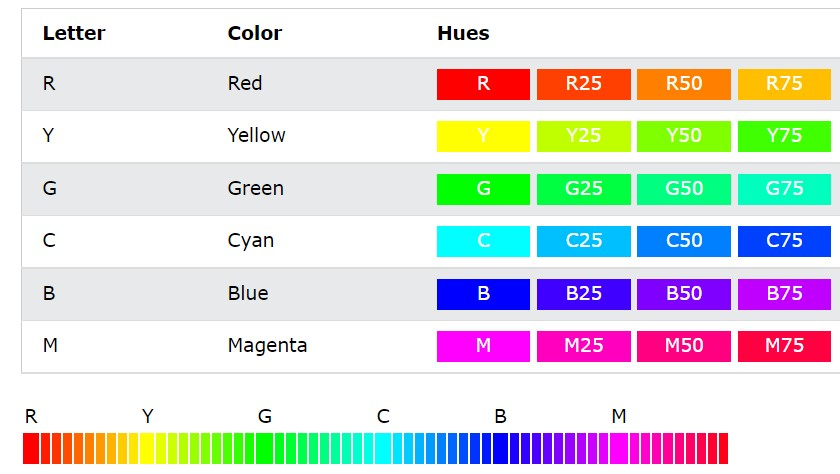
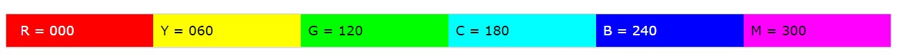

این فرمت رنگ نمایانگر رنگ های طبیعی است؛ به این معنی که مثلا مقدار20red، به معنی رنگ قرمز 20 درصد فراتر از رنگ قرمز اصلی است و همینطور الی آخر که مقدار 100درصد است.  همچنین می توان به صورت 0 تا 360 درجه نیز آن را نشان داد. 